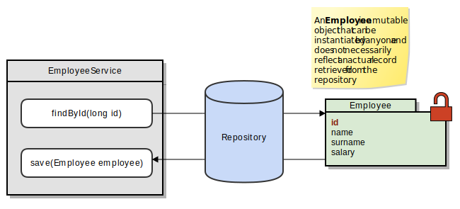
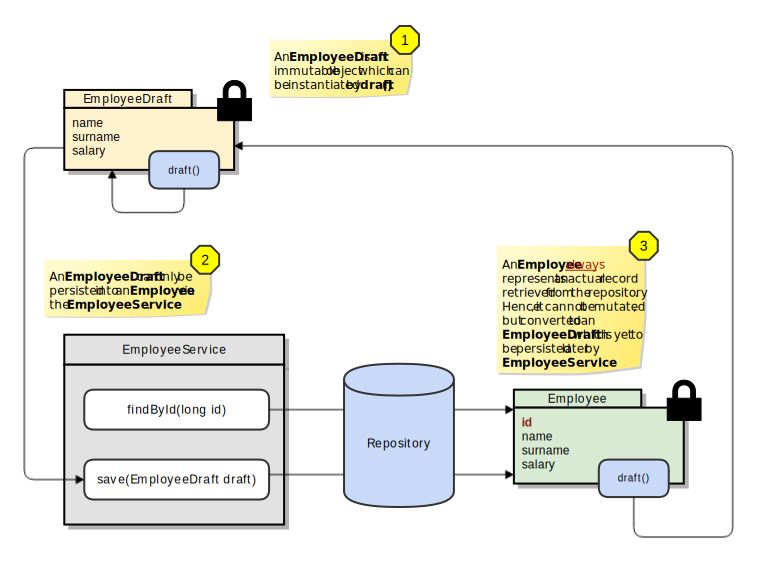

TL;DR – A software design pattern to employ immutable classes for persisting data models in Java. That is, you do not need to ruin your immutable classes because of uncertain
idfields.
When you want store a plain Java model in a data store, you are expected to
deliver an @Id field to the underlying persistence framework.
public class Employee {
@Id
private long id;
// ...
}This single mutable field ruins all your immutable data structure model.
Why? You cannot add a final modifier to an id field, because you do not
know the id yet before persisiting it to the data store.
Employee employee = new Employee("bob"); // id = null
employeeService.save(employee); // id = 84357...And this dirty bit propagates through all your code base and pollutes the
model space with mutable id fields. Further, it becomes almost impossible to
differentiate whether a given Employee instance actually represents a record
retrieved from the data store or just a temporal instance created by
application itself at some point in time. Actually, the entire deficiency is a
side effect of a misunderstanding: you are using the very same model to
encapsulate two different type of entities. One is a model draft, that is yet
to be saved. And the other one is an object that is associated with an
actually persisted object at the data store.

Before trying to come up with a practical solution to the problem at hand, lets determine the set of constraints that needs to be satisfied in order to use immutable data entities throughout the entire code base.
An entity cannot be mutated by any means.
An entity can only be instantiated by the data store service.
The first constraint ensures that the application cannot modify an entity, hence you can freely pass it to around and enjoy the safety of your immutable data structure. But the most important outcome of this scheme, which is addressed in the second constraint, is that: You are guaranteed that an entity always represents a record retrived from the data store at some point in time. That is, you know that it is not an artificially generated instance created out of blue.
After defining what we are looking for, we are ready to come up with a
practical solution. The solution I propose for this problem is a scheme such
that each Employee entity is represented by two different encapsulations
throughout their entire lifetime:
Employee: An immutable representation of a record retrieved from the data
store. Hence, it has an id field as expected.
EmployeeDraft: A yet to be persisted Employee instance (draft)
created either from scratch by the application or by updating an Employee
instance. Since entity is still in the draft stage, it has no id field.
EmployeeService: The one and only one entry point that can create an
Employee service.

I will start by implementing the EmployeeDraft class:
package com.vlkan.immutableentity.repository.employee;
import static com.google.common.base.Preconditions.checkArgument;
import static com.google.common.base.Preconditions.checkNotNull;
public class EmployeeDraft {
protected final String name;
protected final String surname;
protected final int salary;
/** Can only be instantiated through a builder. */
protected EmployeeDraft(String name, String surname, int salary) {
checkNotNull(name, "name cannot be null");
checkArgument(salary > 0, "salary cannot be negative, found: %d", salary);
checkNotNull(surname, "surname cannot be null");
this.name = name;
this.surname = surname;
this.salary = salary;
}
public String getName() { return name; }
public String getSurname() { return surname; }
public int getSalary() { return salary; }
public Builder draft() { return new Builder(this); }
public static class Builder {
protected String name;
protected String surname;
protected int salary;
/** Note that the default constructor is only visible to the package classes. */
Builder() {}
protected Builder(EmployeeDraft draft) {
this.name = draft.name;
this.surname = draft.surname;
this.salary = draft.salary;
}
public Builder name(String name) { this.name = name; return this; }
public Builder surname(String surname) { this.surname = surname; return this; }
public Builder salary(int salary) { this.salary = salary; return this; }
public EmployeeDraft build() { return new EmployeeDraft(name, surname, salary); }
}
}Note that in order to isolate certain fields and methods which are expected to
be only accessed by the Employee ecosystem, the classes are put into a
separate c.v.i.r.employee package and internals are exposed to just package
members. Per see, non-package classes are not allowed to instantiate either
EmployeeDraft or EmployeeDraft.Builder.
package com.vlkan.immutableentity.repository.employee;
public final class Employee extends EmployeeDraft {
private final long id;
/** Note that the default constructor is only visible to the package classes. */
Employee(String name, String surname, int salary, long id) {
super(name, surname, salary);
this.id = id;
}
public long getId() { return id; }
public Builder draft() { return new Builder(this); }
}Employee merely wraps EmployeeDraft by just adding new id field. Note
that non-package classes are not again allowed to instantiate Employee.
Additionally, calling draft() either from an Employee or an
EmployeeDraft always creates a new EmployeeDraft, which also make sense
since the new drafted changes are not persisted yet.
To glue the last piece of the puzzle, here comes the EmployeeService. To
keep things simple, I purposed a Map<Long, Employee> together with an
AtomicLong as a repository.
package com.vlkan.immutableentity.repository.employee;
import java.util.Map;
import java.util.Optional;
import java.util.concurrent.ConcurrentHashMap;
import java.util.concurrent.atomic.AtomicLong;
import java.util.stream.Stream;
import static com.google.common.base.Preconditions.checkNotNull;
public final class EmployeeService {
private final AtomicLong dataCounter = new AtomicLong(0);
private final Map<Long, Employee> dataStore = new ConcurrentHashMap<>();
public EmployeeDraft.Builder draft() { return new EmployeeDraft.Builder(); }
public Employee save(EmployeeDraft draft) { return save(draft, dataCounter.getAndIncrement()); }
public Employee save(EmployeeDraft draft, long id) {
checkNotNull(draft, "draft cannot be null");
Employee employee = new Employee(draft.getName(), draft.getSurname(), draft.getSalary(), id);
dataStore.put(id, employee);
return employee;
}
public Stream<Employee> findAll() { return dataStore.values().stream(); }
public Optional<Employee> findById(long id) { return Optional.ofNullable(dataStore.get(id)); }
}Below you can find an example code snippet that uses the introduced classes.
EmployeeService service = new EmployeeService();
// Create a draft from scratch using the service interface.
EmployeeDraft draft = service.draft().name("Volkan").surname("Yazici").salary(1000).build();
/*
* Drafts
* -------------------------
* draft:
* "Volkan Yazici" $1000
*/
// Persist the draft into the data store and obtain an actual employee.
Employee employee = service.save(draft);
/*
* Drafts | Persisted Employees
* -------------------------+----------------------------
* draft: | employee:
* "Volkan Yazici" $1000 | #0 "Volkan Yazici" $1000
*/
// Modify the persisted employee and save it again.
EmployeeDraft updatedDraft = employee.draft().salary(2000).build();
Employee updatedEmployee = service.save(updatedDraft, employee.getId());
/*
* Drafts | Persisted Employees
* -------------------------+----------------------------
* draft: | employee:
* "Volkan Yazici" $1000 | #0 "Volkan Yazici" $1000
* |
* updatedDraft: | updatedEmployee
* "Volkan Yazici" $2000 | #0 "Volkan Yazici" $2000
*/
// Create a new employee with the same amount of salary using the most recent draft.
EmployeeDraft forkedDraft = updatedDraft.draft().name("Bob").surname("Ross").build();
Employee forkedEmployee = service.save(forkedDraft);
/*
* Drafts | Persisted Employees
* -------------------------+----------------------------
* draft: | employee:
* "Volkan Yazici" $1000 | #0 "Volkan Yazici" $1000
* |
* updatedDraft: | updatedEmployee
* "Volkan Yazici" $2000 | #0 "Volkan Yazici" $2000
* |
* forkedDraft: | forkedEmployee:
* "Bob Ross" $2000 | #1 "Bob Ross" $2000
*/
System.out.println("Persisted Employees:\n" + service.findAll()
.map(e -> String.format("#%d \"%s %s\" $%d",
e.getId(), e.getName(), e.getSurname(), e.getSalary()))
.collect(joining("\n")));
/*
* Persisted Employees:
* #0 "Volkan Yazici" $2000
* #1 "Bob Ross" $2000
*/I had always found it puzzling to work with mutable objects when I needed to work with persistence frameworks; JPA, Hibernate, Spring Data, etc. In the lifetime of almost every project that I start, after a certain period of time, I always find myself implementing my own service layer on top of the used persistence framework using my custom immutable entities. I really do not know whether the approach described in this post is something that was already addressed in the literature or not, but I came up with this idea a couple of months ago and totally benefitted from it in a project. I hope you would find it useful too.